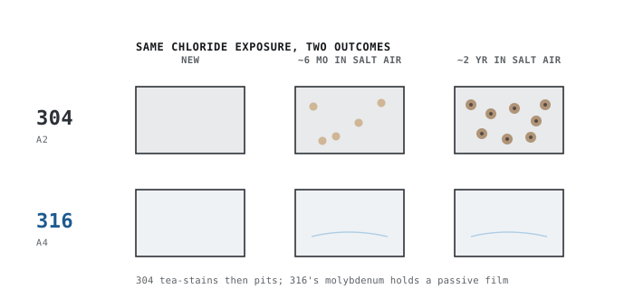

Answer: For saltwater and coastal exposure, use 316 stainless. Its molybdenum content resists the chloride pitting that degrades 304. For the harshest splash-zone marine duty, super-austenitic or duplex grades exist, but for almost all hinge applications 316 is the right call.
Why salt is the enemy
Saltwater is loaded with chloride ions. Chlorides locally break down stainless steel's protective passive layer, creating tiny pits that can grow. 304 has no specific defense against this; 316's molybdenum does. That is the entire reason marine hardware is 316.
What "tea staining" is
Tea staining is the light-brown surface discoloration you see on coastal stainless. It is mostly cosmetic and does not usually weaken the part, but it looks like failure and is the first visible sign 304 is out of its depth. 316 resists it far better, and good maintenance prevents most of it.
Making coastal hardware last
- Specify 316 for anything within a few miles of the ocean.
- Rinse hardware with fresh water periodically to wash off salt deposits — this single habit prevents most tea staining.
- Use matching 316 fasteners; mixing grades or metals invites galvanic corrosion.
- Keep surfaces clean and free of trapped debris where salt can sit.
Saltwater exposure guide
| Setting | Grade | Notes |
|---|---|---|
| Splash / spray zone | 316 | Constant chloride. |
| Submerged / tidal | 316 or higher | Duplex for extreme service. |
| Coastal air (<5 mi) | 316 | Airborne salt. |
| Rinsed occasionally | 316 + rinse | Maintenance extends life. |
Common mistakes to avoid
- Using 304 anywhere salt is present.
- Mixing metals without isolation (galvanic corrosion).
- No fresh-water rinse routine, so salt accumulates in crevices.
- Assuming 316 is maintenance-free.
Frequently asked questions
Is 316 enough for direct saltwater?
For most marine hardware, yes. Continuously submerged or crevice-prone extreme service may call for duplex or higher alloys, but 316 covers the vast majority of coastal and boat hinge needs.
How often should I rinse marine hinges?
A fresh-water rinse after heavy salt exposure — and periodically otherwise — clears the chlorides that cause staining and crevice corrosion.
Will 316 ever stain near the ocean?
In an extreme splash zone, even 316 can show light staining, but far less than 304 and usually only without maintenance. A periodic freshwater rinse keeps it looking new.
Is there anything better than 316 for marine use?
Yes — duplex (e.g., 2205) and super-austenitic grades resist salt even better, but they are expensive and rarely necessary for hinges. 316 is the practical sweet spot.